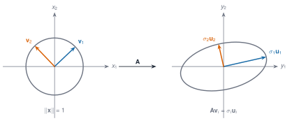
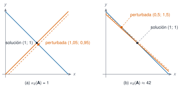
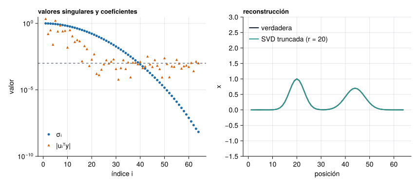
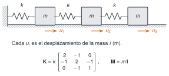
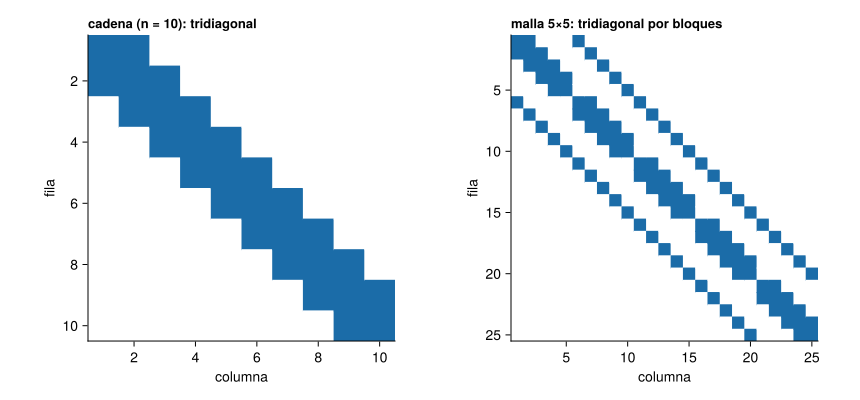
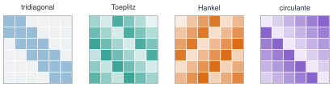
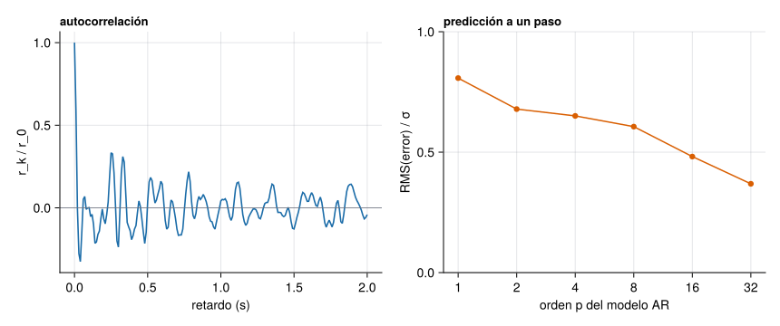
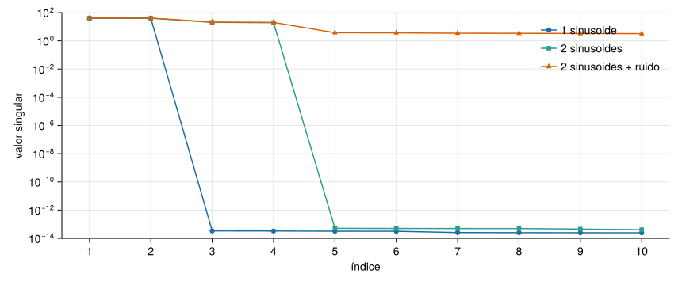
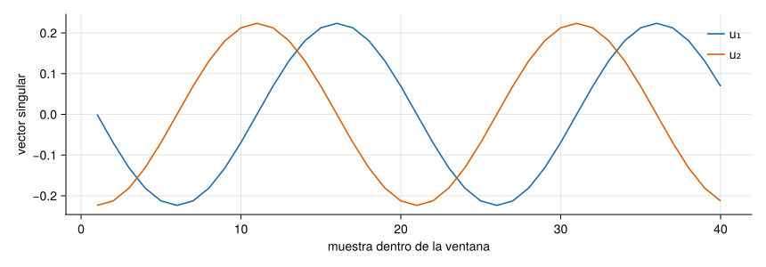

Matrices estructuradas
M2 · M2.1 · Sesión S2

Una matriz con estructura es una matriz cuyas entradas no son independientes: están repetidas, son nulas casi todas, o siguen una regla. Esa estructura se paga y se cobra tres veces. Se cobra en memoria y en tiempo de cálculo, en propiedades que se pueden demostrar, y en algoritmos más rápidos y más estables. Se paga cuando la estructura se pierde: un ruido que rompe un rango, un redondeo que hace perder una simetría.
En vibraciones y análisis de señales aparecen siempre las mismas cuatro familias, y esta página las recorre una a una:
- las matrices de masa y rigidez de una estructura: simétricas, definidas positivas, dispersas y de banda;
- las matrices de Toeplitz, que son las covarianzas de una señal estacionaria;
- las matrices de Hankel, que son las que se construyen al desplazar una señal en el tiempo y de las que parten ERA y SSI;
- las matrices circulantes, que la transformada discreta de Fourier diagonaliza.
NotaCómo se lee esta página
Tiempo orientativo: unas 4 horas, con los cuatro laboratorios y los ejercicios. Nivel: intermedio. En cada apartado hay tres capas: la intuición (figuras y laboratorios), el fundamento (definiciones, teoremas y demostraciones plegables) y la aplicación (ejemplos con registros reales o con modelos de estructuras). Las simulaciones se rotulan «Simulación n» y los resultados de Julia se calculan al compilar la página.
Objetivos y prerrequisitos
Objetivos. Al terminar esta página sabrás:
- calcular normas y números de condición y explicar por qué un sistema lineal puede perder cifras decimales;
- reconocer una matriz simétrica, ortogonal, definida positiva, proyector, de Gram o de covarianza y decir qué significa físicamente;
- construir las matrices de masa y rigidez de una cadena de masas y muelles, representarlas como dispersas y estimar lo que se ahorra;
- construir matrices de Toeplitz, resolver las ecuaciones de Yule–Walker y predecir una señal;
- construir matrices de Hankel, interpretar sus valores singulares y reconstruir una señal con SSA;
- distinguir las cuatro matrices de Hankel que aparecen en identificación (trayectoria, parámetros de Markov, covarianzas y datos);
- calcular una convolución circular con la FFT y saber cuándo coincide con la lineal;
- comparar dos formas modales con el criterio MAC.
Prerrequisitos. J1, J2.5 y J3.3: Julia básico, simulación con semilla y álgebra lineal numérica. Para los ejemplos de vibraciones, las ideas de masa, rigidez y frecuencia natural de M5.
Reparto con otras unidades. Aquí se explica el concepto y se implementan los ejemplos; la teoría de la FFT, la DFT práctica y el método de Welch están en M3.5–M3.6, y los algoritmos de identificación completos (ERA, FDD, SSI) en M7.5–M7.9. Esta página prepara la matemática de esos métodos y los enlaza.
Teoría breve
M2.1.1 Fundamentos de álgebra matricial
Stewart, G. W. 1993. «On the Early History of the Singular Value Decomposition». SIAM Review 35 (4): 551-66. https://doi.org/10.1137/1035134.
Una matriz \(\mathbf A\in\mathbb R^{m\times n}\) es la forma de escribir una aplicación lineal \(T:\mathbb R^n\to\mathbb R^m\) cuando se han elegido una base en cada espacio. El producto de matrices es la composición de aplicaciones, y por eso no es conmutativo: aplicar primero \(\mathbf B\) y después \(\mathbf A\) no es lo mismo que al revés. Si se cambia la base del espacio de partida con una matriz invertible \(\mathbf P\) (las coordenadas nuevas \(\mathbf x'\) cumplen \(\mathbf x=\mathbf P\mathbf x'\)) y la del espacio de llegada con \(\mathbf Q\), la matriz de la misma aplicación pasa a ser \(\mathbf A'=\mathbf Q^{-1}\mathbf A\mathbf P\).
Rango, núcleo e imagen. El núcleo \(\ker\mathbf A=\{\mathbf x:\mathbf A\mathbf x=\mathbf 0\}\) y la imagen \(\operatorname{im}\mathbf A\) (el espacio generado por las columnas) cumplen \(\operatorname{rango}(\mathbf A)+\dim\ker\mathbf A=n\). En una estructura, el núcleo de la matriz de rigidez son los movimientos que no deforman nada (movimientos de sólido rígido).
Adjunta. La adjunta \(\mathbf A^*\) es la que cumple \(\langle\mathbf A\mathbf x,\mathbf y\rangle=\langle\mathbf x,\mathbf A^*\mathbf y\rangle\): es la traspuesta \(\mathbf A^{\mathsf T}\) en el caso real y la traspuesta conjugada \(\mathbf A^{\mathsf H}\) en el complejo.
Ejemplo 1 Cambio de base. El vector \(\mathbf x=(3,\,1)\) en la base canónica, expresado en la base formada por \((1,1)\) y \((1,-1)\), es \(\mathbf x'=\mathbf P^{-1}\mathbf x=(2,\,1)\) con \(\mathbf P=\begin{bmatrix}1&1\\1&-1\end{bmatrix}\), porque \(2\,(1,1)+1\,(1,-1)=(3,1)\). Es el mismo vector con otras coordenadas: lo que cambia es la descripción, no la cantidad física.
Normas
Una norma \(\lVert\cdot\rVert\) mide el «tamaño» de un vector o de una matriz y cumple tres propiedades: es positiva salvo en cero, es homogénea (\(\lVert\alpha\mathbf x\rVert=\lvert\alpha\rvert\lVert\mathbf x\rVert\)) y cumple la desigualdad triangular. Para vectores, \(\lVert\mathbf x\rVert_p=(\sum\lvert x_i\rvert^p)^{1/p}\). Para matrices se usan las normas inducidas, \(\lVert\mathbf A\rVert=\max_{\mathbf x\neq\mathbf 0}\lVert\mathbf A\mathbf x\rVert/\lVert\mathbf x\rVert\), que dan la máxima amplificación que produce \(\mathbf A\):
| Norma | Fórmula | Se calcula |
|---|---|---|
| \(\lVert\mathbf A\rVert_1\) | máxima suma de columnas, \(\max_j\sum_i\lvert a_{ij}\rvert\) | directamente |
| \(\lVert\mathbf A\rVert_\infty\) | máxima suma de filas, \(\max_i\sum_j\lvert a_{ij}\rvert\) | directamente |
| \(\lVert\mathbf A\rVert_2\) | mayor valor singular \(\sigma_{\max}\) | con la SVD |
| \(\lVert\mathbf A\rVert_F\) | \(\sqrt{\sum_{ij}a_{ij}^2}=\sqrt{\sum_k\sigma_k^2}\) | directamente (no es inducida) |
Entre ellas, \(\lVert\mathbf A\rVert_2\le\lVert\mathbf A\rVert_F\le\sqrt{r}\,\lVert\mathbf A\rVert_2\), con \(r\) el rango.

La Figura 1 es la imagen que hay que retener: \(\lVert\mathbf A\rVert_2=\sigma_1\) es el semieje mayor de la elipse (lo máximo que estira \(\mathbf A\)) y \(\sigma_2\) es el menor. Si \(\sigma_2\) fuese cero, la elipse se aplastaría en un segmento y la matriz no tendría inversa.
Inversa, pseudoinversa y mínimos cuadrados
Si \(\mathbf A\) es cuadrada e invertible, \(\mathbf A\mathbf x=\mathbf b\) tiene la solución única \(\mathbf x=\mathbf A^{-1}\mathbf b\). Cuando hay más ecuaciones que incógnitas (más medidas que parámetros), lo habitual es buscar la solución de mínimos cuadrados, la que minimiza \(\lVert\mathbf A\mathbf x-\mathbf b\rVert_2\). La pseudoinversa \(\mathbf A^+=\mathbf V\boldsymbol\Sigma^+\mathbf U^{\mathsf T}\) (que se construye con la SVD, invirtiendo solo los valores singulares no nulos) da, con \(\mathbf x=\mathbf A^+\mathbf b\), la solución de mínimos cuadrados de menor norma. Las ecuaciones normales \(\mathbf A^{\mathsf T}\mathbf A\mathbf x=\mathbf A^{\mathsf T}\mathbf b\) dan la misma solución, pero elevan al cuadrado el condicionamiento, como se ve a continuación.
Condicionamiento
El número de condición de una matriz invertible es \(\kappa(\mathbf A)=\lVert\mathbf A\rVert\,\lVert\mathbf A^{-1}\rVert\). En norma 2 vale
\[ \kappa_2(\mathbf A)=\frac{\sigma_{\max}}{\sigma_{\min}} . \tag{1}\]
Teorema 1 (Sensibilidad de un sistema lineal) Sea \(\mathbf A\) invertible y sean \(\mathbf x\) y \(\mathbf x+\delta\mathbf x\) las soluciones de \(\mathbf A\mathbf x=\mathbf b\) y \(\mathbf A(\mathbf x+\delta\mathbf x)=\mathbf b+\delta\mathbf b\). Entonces \[ \frac{\lVert\delta\mathbf x\rVert}{\lVert\mathbf x\rVert}\;\le\;\kappa(\mathbf A)\,\frac{\lVert\delta\mathbf b\rVert}{\lVert\mathbf b\rVert}. \] Hay vectores \(\mathbf b\) y \(\delta\mathbf b\) para los que se da la igualdad: la cota no se puede mejorar en general.
NotaDemostración
Restando las dos ecuaciones, \(\mathbf A\,\delta\mathbf x=\delta\mathbf b\), es decir, \(\delta\mathbf x=\mathbf A^{-1}\delta\mathbf b\) y, por tanto, \(\lVert\delta\mathbf x\rVert\le\lVert\mathbf A^{-1}\rVert\lVert\delta\mathbf b\rVert\). Por otro lado, \(\mathbf b=\mathbf A\mathbf x\) da \(\lVert\mathbf b\rVert\le\lVert\mathbf A\rVert\lVert\mathbf x\rVert\), es decir, \(1/\lVert\mathbf x\rVert\le\lVert\mathbf A\rVert/\lVert\mathbf b\rVert\). Multiplicando las dos desigualdades se obtiene el resultado. La igualdad se alcanza tomando \(\mathbf b\) en la dirección del vector singular \(\mathbf u_1\) (que da la solución más pequeña, \(\lVert\mathbf x\rVert=\lVert\mathbf b\rVert/\sigma_{\max}\)) y \(\delta\mathbf b\) en la de \(\mathbf u_n\) (que da la perturbación más amplificada, \(\lVert\delta\mathbf x\rVert=\lVert\delta\mathbf b\rVert/\sigma_{\min}\)). \(\square\)
La regla práctica que de aquí sale: se pierden unas \(\log_{10}\kappa(\mathbf A)\) cifras decimales en la solución, porque los errores de redondeo en los datos y en las operaciones (del orden de \(\varepsilon\approx2{,}2\cdot10^{-16}\) en doble precisión) se amplifican hasta \(\kappa\,\varepsilon\). Y como \(\kappa_2(\mathbf A^{\mathsf T}\mathbf A)=\kappa_2(\mathbf A)^2\), resolver mínimos cuadrados con las ecuaciones normales pierde el doble de cifras que con una factorización QR o con la SVD, que es lo que hace A \ b en Julia para matrices rectangulares.

AdvertenciaEl número de condición no depende del algoritmo
\(\kappa(\mathbf A)\) es una propiedad del problema, no del método. Un buen algoritmo (por ejemplo, la eliminación con pivoteo parcial o la QR) no empeora lo que ya hay, pero tampoco lo puede arreglar: si el problema está mal condicionado, ningún método preciso va a dar una solución estable frente a perturbaciones de los datos (Golub y Van Loan 2013).
Ejemplo 2 Matrices de Hilbert. La matriz de Hilbert \(H_{ij}=1/(i+j-1)\) es simétrica y definida positiva, pero se condiciona muy mal. Resolviendo \(\mathbf H\mathbf x=\mathbf H\mathbf 1\) (la solución exacta es el vector de unos) se ve cómo el error crece con \(\kappa\).
Ver el código
hilbert(n) = [1 / (i + j - 1) for i in 1:n, j in 1:n]
filas = map(2:8) do n
A = hilbert(n)
x = ones(n)
err = norm(A \ (A * x) - x) / norm(x)
"| $n | $(replace(@sprintf("%.2e", cond(A)), "." => ",")) | $(replace(@sprintf("%.1e", err), "." => ",")) | $(replace(@sprintf("%.1e", cond(A) * eps()), "." => ",")) |"
end
println("| n | κ₂(H) | error relativo | κ₂·ε |\n|---|---|---|---|\n" * join(filas, "\n"))| n | κ₂(H) | error relativo | κ₂·ε |
|---|---|---|---|
| 2 | 1,93e+01 | 5,7e-16 | 4,3e-15 |
| 3 | 5,24e+02 | 8,0e-15 | 1,2e-13 |
| 4 | 1,55e+04 | 3,6e-13 | 3,4e-12 |
| 5 | 4,77e+05 | 2,1e-13 | 1,1e-10 |
| 6 | 1,50e+07 | 2,6e-10 | 3,3e-09 |
| 7 | 4,75e+08 | 7,8e-09 | 1,1e-07 |
| 8 | 1,53e+10 | 3,8e-07 | 3,4e-06 |
El error real queda por debajo de la cota \(\kappa\varepsilon\) en todos los casos (es una cota, no una predicción) y crece al mismo ritmo que \(\kappa\): para \(n=8\), \(\kappa\approx1{,}5\cdot10^{10}\) y solo quedan unas seis cifras correctas de las dieciséis.
Laboratorio: condicionamiento de un sistema \(2\times 2\)
Simulación 1. Condicionamiento. El sistema es \(\mathbf A\mathbf x=\mathbf b\) con \(\mathbf A=\begin{bmatrix}1&1\\1&1+\varepsilon\end{bmatrix}\) y \(\mathbf b=(2,\;2+\varepsilon)^{\mathsf T}\), cuya solución es siempre \((1,1)\). Modifica \(\varepsilon\) (cuanto menor, más paralelas son las rectas) y la perturbación \(\delta\) del segundo término independiente, y compara el error real con la cota del Teorema 1.
NotaHipótesis y límites de la simulación 1
Solo perturba el término independiente (no la matriz). Con \(\delta=0\) la solución exacta vuelve a ser \((1,1)\). Cuando \(\varepsilon\) es muy pequeña, la matriz está cerca de ser singular y el sistema es casi indeterminado: un cambio mínimo en \(\mathbf b\) mueve la solución por toda la recta. Con \(\delta\) pequeña, el error real queda por debajo de la cota, y llega a ella solo si la perturbación apunta en la dirección más desfavorable.
Calcula el número de condición \(\kappa_2\) de \(\mathbf A=\begin{bmatrix}1&1\\1&1{,}1\end{bmatrix}\) (se obtiene también moviendo el deslizador de la simulación 1 hasta \(\varepsilon=0{,}1\)).
Los valores singulares son \(\sigma_1\approx2{,}0512\) y \(\sigma_2\approx0{,}0487\), y \(\kappa_2=\sigma_1/\sigma_2\approx42{,}1\) (se comprueba con cond([1 1; 1 1.1]) en Julia).
Para una matriz \(\mathbf A\) de rango completo por columnas, \(\kappa_2(\mathbf A^{\mathsf T}\mathbf A)=\kappa_2(\mathbf A)^2\).
Verdadero. Los valores singulares de \(\mathbf A^{\mathsf T}\mathbf A\) son los cuadrados de los de \(\mathbf A\), así que \(\sigma_{\max}^2/\sigma_{\min}^2=\kappa_2(\mathbf A)^2\). Por eso las ecuaciones normales pierden el doble de cifras que la QR o la SVD.
Dos aplicaciones: estimar fuerzas y resolver un problema inverso
Ejemplo 3 Estimación de fuerzas a partir de desplazamientos medidos. En una cadena de \(n=10\) masas y muelles (\(m=1\), \(k=1\), en unidades normalizadas) la fuerza que hay que aplicar para producir un desplazamiento \(\mathbf u\) es \(\mathbf f=\mathbf K\mathbf u\). Si \(\mathbf u\) se mide con un ruido relativo del \(1\,\%\), ¿cuánto error se comete en la fuerza? El teorema anterior, aplicado a \(\mathbf f=\mathbf K\mathbf u\), acota la amplificación por \(\kappa(\mathbf K)\).
Ver el código
n = 10
_, Ks = cadena_masas_muelles(n)
Kd = Matrix(Ks)
E = eigen(Symmetric(Kd))
κK = cond(Kd)
u = E.vectors[:, 1] # desplazamiento = primer modo (norma 1)
f = Kd * u
ε = 0.01
relerr(δ) = norm(Kd * (u + δ) - f) / norm(f)
rng = Xoshiro(2026)
ruido = [(v = randn(rng, n); ε * v / norm(v)) for _ in 1:2000] # 2000 ruidos aleatorios de norma ε
amp_alea = [relerr(δ) / ε for δ in ruido]
amp_peor = relerr(ε * E.vectors[:, end]) / ε # ruido en la dirección del modo más alto
nothingLa cota es \(\kappa(\mathbf K)=\) 175. Con un ruido aleatorio, el error en la fuerza se amplifica de media 103 veces (máximo de los 2000 ensayos: 162); con el ruido en la dirección del modo más alto, 175 veces: se alcanza justo la cota. Es lo que ocurre al derivar una señal medida: los componentes de alta frecuencia del ruido pesan mucho más en las fuerzas que en los desplazamientos, mientras la señal útil (aquí, el primer modo) casi no genera fuerzas.
Ejemplo 4 Un problema inverso: deshacer un suavizado. Una señal \(\mathbf x\) se mide a través de un instrumento que la suaviza con un núcleo gaussiano: \(\mathbf y=\mathbf H\mathbf x+\text{ruido}\), con \(\mathbf H\) una matriz de Toeplitz simétrica (\(H_{ij}=h_{|i-j|}\), con \(h_k\propto e^{-k^2/8}\)). Recuperar \(\mathbf x\) exige invertir \(\mathbf H\), que está extremadamente mal condicionada.
Ver el código
n = 64
σb = 2.0
h = [exp(-0.5 * (k / σb)^2) for k in 0:n-1]
h ./= (h[1] + 2 * sum(h[2:end])) # núcleo normalizado
H = toeplitz(h)
bump(c, w) = [exp(-0.5 * ((i - c) / w)^2) for i in 1:n]
xverd = bump(20, 3.0) .+ 0.7 .* bump(44, 4.0)
σn = 1e-3
y = H * xverd + σn * randn(Xoshiro(7), n)
F = svd(H)
x_ingenuo = H \ y
coef = F.U' * y # coeficientes de y en la base U
r_picard = findlast(i -> abs(coef[i]) > 3 * σn, 1:n)
errores_r = map(1:30) do r
xr = F.V[:, 1:r] * (coef[1:r] ./ F.S[1:r])
norm(xr - xverd) / norm(xverd)
end
r_opt = argmin(errores_r)
x_tsvd = F.V[:, 1:r_opt] * (coef[1:r_opt] ./ F.S[1:r_opt])
nothingVer el código
fig = Figure(size=(860, 380))
ax1 = Axis(fig[1, 1]; yscale=log10, xlabel="índice i", ylabel="valor", title="valores singulares y coeficientes", titlealign=:left, titlesize=13)
scatter!(ax1, 1:n, F.S; color=AZUL, label="σᵢ", markersize=7)
scatter!(ax1, 1:n, abs.(coef) .+ 1e-16; color=NARANJA, label="|uᵢᵀy|", markersize=7, marker=:utriangle)
hlines!(ax1, [σn]; color=GRIS, linestyle=:dash)
ylims!(ax1, 1e-10, 3)
axislegend(ax1; position=:lb, framevisible=false)
ax2 = Axis(fig[1, 2]; xlabel="posición", ylabel="x", title="reconstrucción", titlealign=:left, titlesize=13)
lines!(ax2, 1:n, xverd; color=TINTA, linewidth=2.2, label="verdadera")
lines!(ax2, 1:n, x_tsvd; color=VERDE, linewidth=2, label="SVD truncada (r = $r_opt)")
ylims!(ax2, -1.5, 3)
axislegend(ax2; position=:lt, framevisible=false)
fig
La inversión directa da un error relativo de 61118 (¡5 órdenes de magnitud por encima de la señal!), porque divide por valores singulares de hasta 7e-09 los coeficientes de ruido. Truncar la SVD en \(r=\) 20 componentes (aquí se elige el \(r\) que minimiza el error, conociendo la solución verdadera; en la práctica se usa el punto donde los coeficientes llegan al nivel de ruido, que da \(r\approx\) 43) deja un error relativo de 0,7 %. Esto es regularizar: se renuncia a las componentes que el ruido domina.
AdvertenciaLo que no se puede recuperar
Si la señal verdadera tuviese picos finos (por ejemplo, impulsos de una muestra de ancho), la regularización no los recuperaría: la información sobre ellos está en las componentes de valor singular muy pequeño, que el ruido ha borrado. El suavizado es una pérdida de información que ninguna matemática repone.
Una colega propone estimar las cargas que actúan sobre un puente invirtiendo directamente la matriz que relaciona cargas y desplazamientos medidos. Explica en tres frases qué comprobarías antes de fiarte del resultado.
- Calculo el número de condición de la matriz y estimo cuántas cifras se pierden.
- Compruebo el efecto del ruido de medida: lo simulo y miro cuánto se amplifica en las cargas.
- Menciono la regularización (SVD truncada o similar) como forma de limitar la amplificación, y que descarta información.
Calcularía \(\kappa_2\) y los valores singulares de la matriz; simularía desplazamientos con ruido del tamaño real de los sensores y vería la dispersión de las cargas estimadas; y, si la amplificación es grande, truncaría la SVD en el rango donde los coeficientes de los datos superan el nivel de ruido, aceptando que las cargas de variación rápida no se podrán estimar.
M2.1.2 Matrices fundamentales
Estas son las familias que se usan sin parar. Cada una lleva asociada una propiedad que se puede comprobar numéricamente y un significado físico.
| Matriz | Definición | Qué garantiza | Dónde aparece |
|---|---|---|---|
| Diagonal | \(a_{ij}=0\) si \(i\ne j\) | valores propios = diagonal | masas concentradas; \(\boldsymbol\Sigma\) de la SVD |
| Triangular | ceros por encima (o por debajo) de la diagonal | se resuelve por sustitución | factorizaciones LU y Cholesky |
| Simétrica / antisimétrica | \(\mathbf A=\mathbf A^{\mathsf T}\) / \(\mathbf A=-\mathbf A^{\mathsf T}\) | simétrica: valores propios reales y vectores ortogonales | \(\mathbf M\), \(\mathbf K\), covarianzas |
| Hermítica / antihermítica | \(\mathbf A=\mathbf A^{\mathsf H}\) / \(\mathbf A=-\mathbf A^{\mathsf H}\) | igual, en complejo | matrices espectrales cruzadas |
| Ortogonal / unitaria | \(\mathbf Q^{\mathsf T}\mathbf Q=\mathbf I\) / \(\mathbf U^{\mathsf H}\mathbf U=\mathbf I\) | conserva normas y ángulos; \(\kappa_2=1\) | modos normalizados; DFT\(/\sqrt N\) |
| Idempotente | \(\mathbf P^2=\mathbf P\) | valores propios 0 o 1 | proyecciones |
| Proyector ortogonal | idempotente y simétrica | proyecta sobre un subespacio sin deformarlo | mínimos cuadrados |
| Semidefinida positiva | \(\mathbf x^{\mathsf T}\mathbf A\mathbf x\ge0\) | valores propios \(\ge0\) | energía; covarianzas; Gram |
| Definida positiva | \(\mathbf x^{\mathsf T}\mathbf A\mathbf x>0\) si \(\mathbf x\ne\mathbf 0\) | valores propios \(>0\); admite Cholesky | \(\mathbf M\) siempre; \(\mathbf K\) con apoyos |
| Gram | \(\mathbf G=\mathbf A^{\mathsf T}\mathbf A\) | semidefinida; mismo rango que \(\mathbf A\) | ecuaciones normales; MAC |
| Covarianza | \(\mathbf C=\mathbb E[(\mathbf x-\boldsymbol\mu)(\mathbf x-\boldsymbol\mu)^{\mathsf T}]\) | simétrica y semidefinida | PCA; matrices de correlación |
Teorema espectral. Una matriz real simétrica \(\mathbf A\) se puede escribir como \(\mathbf A=\mathbf Q\boldsymbol\Lambda\mathbf Q^{\mathsf T}\), con \(\mathbf Q\) ortogonal y \(\boldsymbol\Lambda\) diagonal real. Es la base del análisis modal (M2.2): para \(\mathbf K\boldsymbol\phi=\omega^2\mathbf M\boldsymbol\phi\) con \(\mathbf M\) y \(\mathbf K\) simétricas y \(\mathbf M\) definida positiva, hay \(n\) frecuencias \(\omega_i^2\) reales y modos \(\boldsymbol\phi_i\) ortogonales respecto de \(\mathbf M\) y de \(\mathbf K\).
Energía. La energía cinética de un sistema es \(T=\tfrac12\dot{\mathbf u}^{\mathsf T}\mathbf M\dot{\mathbf u}\) y la de deformación \(U=\tfrac12\mathbf u^{\mathsf T}\mathbf K\mathbf u\). Que \(\mathbf M\) sea definida positiva significa que cualquier movimiento tiene energía cinética positiva (la masa nunca es cero ni negativa). Que \(\mathbf K\) sea semidefinida positiva significa que ningún movimiento libera energía; será definida solo si no hay movimientos de sólido rígido.
AdvertenciaHipótesis que hay que comprobar
\(\mathbf K\) puede ser solo semidefinida. Una estructura sin apoyos (un avión en vuelo, una cadena de masas libre en los dos extremos) tiene movimientos de sólido rígido que no deforman ningún muelle: están en el núcleo de \(\mathbf K\), que es singular y no admite Cholesky. Una covarianza muestral puede ser singular. La covarianza de \(n\) variables estimada con \(N\) muestras tiene rango como mucho \(N-1\): si \(N\le n\), no es invertible.
Ver el código
function cadena_libre(n) # n masas, muelles k = 1 entre vecinas, sin apoyos
K = zeros(n, n)
for i in 1:n-1
K[i, i] += 1; K[i+1, i+1] += 1; K[i, i+1] -= 1; K[i+1, i] -= 1
end
K
end
Klibre = cadena_libre(5)
_, Kanc = cadena_masas_muelles(5)
Kanc = Matrix(Kanc) # la misma cadena anclada a una pared
λlibre = eigvals(Symmetric(Klibre))
rng = Xoshiro(11)
X = randn(rng, 6, 4) # 4 muestras de 6 variables
Ccov = cov(X; dims=2) # covarianza 6×6 con solo 4 muestras
info = (
rango_libre = rank(Klibre), menor_libre = minimum(λlibre),
chol_libre = isposdef(Klibre), chol_anclada = isposdef(Kanc),
rango_cov = rank(Ccov),
)
nothingPara la cadena libre de 5 masas, el menor valor propio de \(\mathbf K\) es 9,1e-17 (cero salvo redondeo), su rango es 4 (una menos que el orden) y no es definida positiva (isposdef da false); al anclar un extremo a una pared deja de haber movimientos de sólido rígido y isposdef da true. La covarianza de 6 variables con solo 4 muestras tiene rango 3, que es \(N-1=3\).
Proyectores. Si \(\mathbf A\) tiene rango completo por columnas, \(\mathbf P=\mathbf A(\mathbf A^{\mathsf T}\mathbf A)^{-1}\mathbf A^{\mathsf T}\) es el proyector ortogonal sobre la imagen de \(\mathbf A\): cumple \(\mathbf P^2=\mathbf P=\mathbf P^{\mathsf T}\). El residuo de mínimos cuadrados es \(\mathbf b-\mathbf P\mathbf b=(\mathbf I-\mathbf P)\mathbf b\), ortogonal a la imagen. Un idempotente no simétrico es un proyector oblicuo: proyecta, pero no a lo largo de la dirección perpendicular. Aparecen en los métodos de subespacios (M7.8).
La matriz de rigidez de una estructura sin ningún apoyo es definida positiva.
Falso. Los movimientos de sólido rígido (traslaciones y giros) están en el núcleo de \(\mathbf K\): la hacen singular y, como mucho, semidefinida positiva. Hace falta fijar la estructura (o eliminar esos modos) para que sea definida positiva.
Se estima la covarianza de \(n=6\) variables con \(N=4\) muestras. ¿Cuál es el rango máximo de la matriz de covarianza muestral?
\(N-1=3\): las \(N\) muestras centradas son linealmente dependientes (suman cero), así que generan un subespacio de dimensión como mucho \(N-1\).
M2.1.3 Matrices dispersas, de banda y por bloques
En una estructura discretizada, cada grado de libertad solo interactúa con los vecinos: la mayoría de las entradas de \(\mathbf K\) y \(\mathbf M\) son cero. Una matriz dispersa (sparse) es la que tiene muy pocas entradas no nulas; es de banda si todas están a distancia \(\le b\) de la diagonal (\(b\) es el semiancho de banda); es tridiagonal si \(b=1\); y es por bloques si se puede particionar en submatrices.

Para \(n\) masas \(m\) unidas por muelles \(k\), con la primera anclada y la última libre, \(\mathbf M=m\mathbf I\) y
\[ \mathbf K=k\begin{bmatrix}2&-1&&\\-1&2&-1&\\&\ddots&\ddots&\ddots\\&&-1&1\end{bmatrix}. \tag{2}\]
Tiene \(3n-2\) entradas no nulas de \(n^2\). Julia almacena las matrices dispersas por columnas comprimidas (CSC, compressed sparse column): en lugar de \(n^2\) números guarda tres vectores, colptr, rowval y nzval. Python, con SciPy, admite CSC y también CSR (la misma idea, por filas).
Ver el código
_, K4 = cadena_masas_muelles(4)
(colptr = K4.colptr, rowval = K4.rowval, nzval = K4.nzval)(colptr = [1, 3, 6, 9, 11], rowval = [1, 2, 1, 2, 3, 2, 3, 4, 3, 4], nzval = [2.0, -1.0, -1.0, 2.0, -1.0, -1.0, 2.0, -1.0, -1.0, 1.0])nzval guarda los números no nulos columna a columna, rowval su fila y colptr[j] indica dónde empieza la columna \(j\) dentro de los otros dos.
Ver el código
function patron(K)
P = Matrix(K) .!= 0
P
end
_, K10 = cadena_masas_muelles(10)
K1d = Matrix(spdiagm(-1 => fill(-1.0, 4), 0 => fill(2.0, 5), 1 => fill(-1.0, 4)))
Kmalla = kron(I(5), K1d) + kron(K1d, I(5)) # malla 5×5: 25 grados de libertad
fig = Figure(size=(860, 400))
for (j, (K, titulo)) in enumerate(((Matrix(K10), "cadena (n = 10): tridiagonal"), (Kmalla, "malla 5×5: tridiagonal por bloques")))
ax = Axis(fig[1, j]; title=titulo, titlealign=:left, titlesize=13, yreversed=true, aspect=DataAspect(), xlabel="columna", ylabel="fila")
heatmap!(ax, 1:size(K, 2), 1:size(K, 1), Float64.(patron(K))'; colormap=[:white, AZUL], colorrange=(0, 1))
end
fig
¿Qué se ahorra? Almacenamiento: de \(8n^2\) bytes (densa, Float64) a unos \(16\cdot(3n-2)+8(n+1)\) (CSC). Tiempo: resolver un sistema tridiagonal cuesta \(O(n)\) operaciones; una factorización densa, \(O(n^3)\). La tabla compara memoria y tiempos de resolver \(\mathbf K\mathbf x=\mathbf f\) en un ordenador concreto.
Ver el código
function bench(n)
_, Ks = cadena_masas_muelles(n)
Kd = Matrix(Ks); b = ones(n)
Ks \ b; Kd \ b # calentamiento (compilación)
ts = minimum(@elapsed(Ks \ b) for _ in 1:7)
td = minimum(@elapsed(Kd \ b) for _ in 1:7)
(n=n, nnz=nnz(Ks), mem_d=sizeof(Kd), mem_s=Base.summarysize(Ks), ts=ts, td=td)
end
res = [bench(n) for n in (2, 3, 10, 100, 1000, 2000)]
fmt_b(b) = b < 1e3 ? "$(b) B" : b < 1e6 ? "$(coma(b / 1e3; d=1)) kB" : "$(coma(b / 1e6; d=1)) MB"
fmt_t(t) = t < 1e-3 ? "$(coma(t * 1e6; d=1)) µs" : "$(coma(t * 1e3; d=2)) ms"
println("| n | no nulos | densa | dispersa | resolver (densa) | resolver (dispersa) |\n|---|---|---|---|---|---|\n" *
join(["| $(r.n) | $(r.nnz) | $(fmt_b(r.mem_d)) | $(fmt_b(r.mem_s)) | $(fmt_t(r.td)) | $(fmt_t(r.ts)) |" for r in res], "\n"))| n | no nulos | densa | dispersa | resolver (densa) | resolver (dispersa) |
|---|---|---|---|---|---|
| 2 | 4 | 32 B | 248 B | 0,1 µs | 3,5 µs |
| 3 | 7 | 72 B | 304 B | 0,1 µs | 3,6 µs |
| 10 | 28 | 800 B | 696 B | 0,6 µs | 4,2 µs |
| 100 | 298 | 80,0 kB | 5,7 kB | 34,7 µs | 13,2 µs |
| 1000 | 2998 | 8,0 MB | 56,1 kB | 14,19 ms | 93,8 µs |
| 2000 | 5998 | 32,0 MB | 112,1 kB | 103,83 ms | 197,2 µs |
AdvertenciaNo generalices un único experimento
Los tiempos de la Tabla 3 dependen del procesador, de la versión de Julia y de las bibliotecas (cada vez que se compila la página pueden cambiar). Para \(n=2\) o \(3\) la forma dispersa no ahorra nada, porque la matriz es minúscula y el coste fijo de la estructura domina. Lo que sí es general es la tendencia: la memoria densa crece como \(n^2\) y la dispersa como \(n\); y el coste de resolver, como \(n^3\) (densa) frente a un coste casi lineal en \(n\) (tridiagonal o de banda). Para otras estructuras (mallas bidimensionales, por ejemplo) el ahorro es menor y depende de cómo se numeren los nodos.
Factorizaciones adecuadas. Para una matriz simétrica definida positiva, como la de rigidez de una estructura anclada, se usa la factorización de Cholesky \(\mathbf K=\mathbf L\mathbf L^{\mathsf T}\), que ocupa la mitad de memoria y no necesita pivotear. Si \(\mathbf K\) es de banda con semiancho \(b\), \(\mathbf L\) también lo es, y el coste baja de \(O(n^3)\) a \(O(nb^2)\). Un orden de numeración de nodos que reduzca la banda es parte del diseño de un modelo de elementos finitos (Golub y Van Loan 2013).
¿Cuántos elementos no nulos tiene la matriz de rigidez de una cadena de \(n=100\) masas (\(\mathbf K\) de la ecuación 2)?
\(3n-2=298\): \(n\) en la diagonal y \(n-1\) en cada una de las dos codiagonales. Se comprueba con nnz(cadena_masas_muelles(100)[2]).
Una matriz de rigidez de una estructura con \(n=50\,000\) grados de libertad, ¿cómo conviene almacenarla?
- Como matriz densa, porque siempre es más rápida.
- Como matriz densa, pero en simple precisión.
- Como matriz dispersa (simétrica), porque la mayoría de las entradas son cero.
- No se puede almacenar: es demasiado grande.
La c. Una matriz densa de \(50\,000^2\) elementos Float64 ocuparía unos \(20\) GB, mientras que la dispersa de una estructura con conectividad local tiene del orden de \(n\) elementos no nulos por fila y cabe en unas decenas de megabytes.
M2.1.4 Matrices de Toeplitz
Gray, Robert M. 2006. «Toeplitz and Circulant Matrices: A Review». Foundations and Trends in Communications and Information Theory 2 (3): 155-239. https://doi.org/10.1561/0100000006.
Toeplitz, Otto. 1911. «Zur Theorie der quadratischen und bilinearen Formen von unendlichvielen Veränderlichen». Mathematische Annalen 70 (3): 351-76. https://doi.org/10.1007/BF01564502.
Una matriz de Toeplitz es la que tiene las diagonales constantes:
\[ T_{ij}=t_{i-j},\qquad \mathbf T=\begin{bmatrix}t_0&t_{-1}&t_{-2}&t_{-3}\\t_1&t_0&t_{-1}&t_{-2}\\t_2&t_1&t_0&t_{-1}\\t_3&t_2&t_1&t_0\end{bmatrix}. \tag{3}\]
Hay \(2n-1\) números libres, no \(n^2\). Es simétrica si \(t_{-k}=t_k\) y hermítica si \(t_{-k}=\overline{t_k}\).

Relación con la convolución. Si un filtro causal tiene respuesta impulsional \(h_0,h_1,\dots\), su salida a una entrada \(\mathbf x\) es \(y_k=\sum_{i\le k}h_{k-i}x_i\): es el producto \(\mathbf y=\mathbf T\mathbf x\) con \(\mathbf T\) la Toeplitz triangular inferior de primera columna \(\mathbf h\).
Relación con la autocorrelación. Si \(x_t\) es un proceso débilmente estacionario de media cero, su autocovarianza solo depende del retardo, \(r_k=\mathbb E[x_{t+k}x_t]\) con \(r_{-k}=r_k\), y la matriz de covarianzas de \((x_1,\dots,x_n)\) es la Toeplitz simétrica \(\mathbf T_n=[r_{|i-j|}]\). Es semidefinida positiva: \(\mathbf a^{\mathsf T}\mathbf T_n\mathbf a=\operatorname{var}(\sum a_ix_i)\ge0\). Dicho al revés, solo si todas las matrices \(\mathbf T_n\) formadas con una secuencia \(r_k\) son semidefinidas positivas puede ser \(r_k\) una autocorrelación.
Modelos autorregresivos y Yule–Walker
Un modelo autorregresivo de orden \(p\), AR(\(p\)), supone que cada muestra depende linealmente de las \(p\) anteriores y de una innovación \(e_t\) de ruido blanco (media cero y varianza \(\sigma^2\)):
\[ x_t=\sum_{j=1}^p\phi_j\,x_{t-j}+e_t . \tag{4}\]
Multiplicando por \(x_{t-k}\) y tomando esperanzas, para \(k\ge1\) resulta \(r_k=\sum_j\phi_jr_{k-j}\), que escrito para \(k=1,\dots,p\) es un sistema con una matriz de Toeplitz: las ecuaciones de Yule–Walker
\[ \underbrace{\begin{bmatrix}r_0&r_1&\cdots&r_{p-1}\\r_1&r_0&\cdots&r_{p-2}\\\vdots&&\ddots&\vdots\\r_{p-1}&r_{p-2}&\cdots&r_0\end{bmatrix}}_{\mathbf T_p}\begin{bmatrix}\phi_1\\\phi_2\\\vdots\\\phi_p\end{bmatrix}=\begin{bmatrix}r_1\\r_2\\\vdots\\r_p\end{bmatrix},\qquad \sigma^2=r_0-\sum_{j=1}^p\phi_jr_j . \tag{5}\]
NotaDemostración de la segunda ecuación (varianza de la innovación)
Multiplicando (ecuación 4) por \(x_t\) y tomando esperanzas: \(r_0=\sum_j\phi_jr_j+\mathbb E[e_tx_t]\). Como \(e_t\) no está correlada con las muestras pasadas, \(\mathbb E[e_tx_t]=\mathbb E[e_t^2]=\sigma^2\), y se obtiene \(\sigma^2=r_0-\sum_j\phi_jr_j\). \(\square\)
Con las autocorrelaciones estimadas \(\hat r_k\) se obtienen los coeficientes del modelo, y con ellos la predicción lineal a un paso, \(\hat x_t=\sum_j\phi_jx_{t-j}\). Cuanto más «predecible» sea la señal, menor es el error. Yule (1927) y Walker (1931) estudiaron la periodicidad de series perturbadas y dieron nombre a estas ecuaciones (Yule 1927; Walker 1931).
Yule, G. Udny. 1927. «On a method of investigating periodicities in disturbed series, with special reference to Wolfer’s sunspot numbers». Philosophical Transactions of the Royal Society of London. Series A 226: 267-98. https://doi.org/10.1098/rsta.1927.0007.
Walker, Gilbert T. 1931. «On periodicity in series of related terms». Proceedings of the Royal Society of London. Series A 131 (818): 518-32. https://doi.org/10.1098/rspa.1931.0069.
Golub, Gene H., y Charles F. Van Loan. 2013. Matrix Computations. 4.ª ed. Johns Hopkins University Press.
Algoritmos estructurados. Como \(\mathbf T_p\) es Toeplitz, hay una recursión (Levinson–Durbin) que resuelve (ecuación 5) con \(O(p^2)\) operaciones en lugar de \(O(p^3)\), y calcula de paso los coeficientes de reflexión \(\kappa_k\), que cumplen \(\lvert\kappa_k\rvert<1\) si \(\mathbf T_p\) es definida positiva. Es útil para órdenes grandes, pero tiene una limitación numérica: con matrices mal condicionadas pierde precisión, y un \(\hat r_k\) calculado con ruido puede no ser una autocorrelación válida; conviene entonces regularizar o usar la autocorrelación sesgada (dividir por \(N\) y no por \(N-k\)), que garantiza matrices semidefinidas positivas (Golub y Van Loan 2013).
Ejemplo 5 Una Toeplitz de dimensión 4. Con \(t_0=3\), \(t_{\pm1}=2\), \(t_{\pm2}=1\), \(t_{\pm3}=0\) se obtiene la Toeplitz simétrica del código siguiente. Es de banda (\(b=2\)) y, por ser diagonalmente dominante, definida positiva.
Ver el código
T4 = toeplitz([3, 2, 1, 0])
(T4, isposdef(Symmetric(float.(T4))))([3 2 1 0; 2 3 2 1; 1 2 3 2; 0 1 2 3], true)Ejemplo 6 Un proceso AR(1). Con \(\phi\) y varianza de innovación \(\sigma^2\), \(r_k=\sigma^2\phi^{k}/(1-\phi^2)\): la autocorrelación decae geométricamente. La persistencia temporal (\(\phi\) cercano a 1) se refleja en el condicionamiento de su matriz de Toeplitz.
Ver el código
filas = map((0.2, 0.9, 0.99)) do ρ
r = [ρ^k for k in 0:29]
T = toeplitz(r)
λ = eigvals(Symmetric(T))
"| $(coma(ρ)) | $(coma(minimum(λ); d=3)) | $(coma(maximum(λ); d=2)) | $(coma(cond(T); d=0)) |"
end
println("| ρ = φ | λ mín | λ máx | κ₂ |\n|---|---|---|---|\n" * join(filas, "\n"))| ρ = φ | λ mín | λ máx | κ₂ |
|---|---|---|---|
| 0,20 | 0,668 | 1,50 | 2 |
| 0,90 | 0,053 | 13,54 | 257 |
| 0,99 | 0,005 | 27,21 | 5401 |
Cuando \(\phi\to1\) la señal cambia muy despacio, las muestras vecinas son casi iguales y la matriz tiende a ser singular: el condicionamiento crece rápido.
Ejemplo 7 Aceleración de un puente real. Se estima la autocorrelación de la aceleración vertical de la estación GS1 del puente de Torroja (medida 1, 100 Hz; véase R1 y (Pachón et al. 2018)), hasta un retardo de 0,5 s. La matriz de Toeplitz resultante y el modelo AR de la señal se calculan a continuación.
Pachón, Pablo, Rafael Castro, Enrique García-Macías, Víctor Compán, y Esther Puertas. 2018. «E. Torroja’s bridge: Tailored experimental setup for SHM of a historical bridge with a reduced number of sensors». Engineering Structures 162: 11-21. https://doi.org/10.1016/j.engstruct.2018.02.035.
Ver el código
t, a, fs, = leer_torroja(TORROJA * "s1_medida01.txt")
x = a[:, 3] .* 1e3 # mg
r = autocorrelacion(x, 200)
Tt = toeplitz(r[1:51])
λT = eigvals(Symmetric(Tt))
ordenes = [1, 2, 4, 8, 16, 32]
razon = map(ordenes) do p
phi, _ = yule_walker(r, p)
pred = [sum(phi[j] * (x[s-j] - mean(x)) for j in 1:p) + mean(x) for s in p+1:length(x)]
sqrt(mean((x[p+1:end] .- pred) .^ 2)) / std(x)
end
nothingVer el código
fig = Figure(size=(860, 360))
ax1 = Axis(fig[1, 1]; xlabel="retardo (s)", ylabel="r_k / r_0", title="autocorrelación", titlealign=:left, titlesize=13)
lines!(ax1, (0:200) ./ fs, r ./ r[1]; color=AZUL)
hlines!(ax1, [0]; color=GRIS, linewidth=0.8)
ax2 = Axis(fig[1, 2]; xlabel="orden p del modelo AR", ylabel="RMS(error) / σ", title="predicción a un paso", titlealign=:left, titlesize=13, xscale=log2, xticks=ordenes)
scatterlines!(ax2, ordenes, razon; color=NARANJA, markersize=9)
ylims!(ax2, 0, 1)
fig
La matriz de Toeplitz \(51\times51\) tiene todos sus valores propios positivos (el menor es 6,8e-07), como debe ser en una autocorrelación sesgada, aunque está mal condicionada (\(\kappa_2=\) 3,6e+06): la señal tiene unos pocos picos espectrales dominantes (los modos del puente) y muy poca energía en el resto. Por eso un modelo AR de orden 32 deja un error de predicción de 37 % de la desviación típica de la señal, frente al 81 % del orden 1. Es una predicción dentro de la muestra (los coeficientes se estiman con los mismos datos), así que mide el ajuste del modelo, no su capacidad de predecir datos nuevos.
Laboratorio: Toeplitz, AR y predicción
Simulación 2. Un proceso AR(2) oscilante. La señal tiene una frecuencia propia \(f_0\) y una persistencia (el módulo \(r\) de los polos): \(x_t=2r\cos(2\pi f_0/f_s)\,x_{t-1}-r^2x_{t-2}+e_t\), con \(f_s=100\) Hz. Se observa con un ruido blanco de medida de desviación \(\sigma_{\text{med}}\). Mira cómo cambian la autocorrelación, los valores propios y el condicionamiento de la Toeplitz, y cómo el ruido de medida sesga la estimación de Yule–Walker.
NotaHipótesis y límites de la simulación 2
El modelo supone un AR(2) estacionario con innovación gaussiana; la señal real de una estructura es más rica. Con \(\sigma_{\text{med}}=0\) y \(p=2\), Yule–Walker recupera los coeficientes teóricos con un error que baja con \(N\). Con ruido de medida, los coeficientes estimados quedan sesgados (el ruido infla \(r_0\) pero no \(r_k\)): el modelo AR(2) deja de ser el verdadero, y subir \(p\) lo compensa en parte. La predicción se evalúa sobre los mismos datos con que se estiman los coeficientes.
Un proceso AR(1) tiene \(\phi=0{,}6\) y varianza de innovación \(\sigma^2=1\). Calcula su autocorrelación en el retardo 1, \(r_1\).
\(r_0=\sigma^2/(1-\phi^2)=1/0{,}64=1{,}5625\) y \(r_1=\phi\,r_0=0{,}6\cdot1{,}5625=0{,}9375\) (Yule–Walker con \(p=1\): \(\phi=r_1/r_0\)).
La matriz de Toeplitz construida con la autocorrelación muestral sesgada (dividiendo por \(N\)) de una señal es siempre simétrica y semidefinida positiva.
Verdadero. Con la media restada y la señal prolongada con ceros, \(\mathbf T_n=\tfrac1N\mathbf X^{\mathsf T}\mathbf X\), con \(\mathbf X\) la matriz rectangular de datos desplazados: es una matriz de Gram, simétrica y semidefinida positiva (pueden aparecer valores propios ligeramente negativos solo por redondeo). Con el divisor \(N-k\) esta garantía se pierde.
M2.1.5 Matrices de Hankel
Peeters, Bart, y Guido De Roeck. 1999. «Reference-based stochastic subspace identification for output-only modal analysis». Mechanical Systems and Signal Processing 13 (6): 855-78. https://doi.org/10.1006/mssp.1999.1249.
Juang, Jer-Nan, y Richard S. Pappa. 1985. «An eigensystem realization algorithm for modal parameter identification and model reduction». Journal of Guidance, Control, and Dynamics 8 (5): 620-27. https://doi.org/10.2514/3.20031.
Golyandina, Nina, y Anatoly Zhigljavsky. 2013. Singular Spectrum Analysis for Time Series. SpringerBriefs en Statistics. Springer. https://doi.org/10.1007/978-3-642-34913-3.
Broomhead, D. S., y Gregory P. King. 1986. «Extracting qualitative dynamics from experimental data». Physica D: Nonlinear Phenomena 20 (2–3): 217-36. https://doi.org/10.1016/0167-2789(86)90031-X.
Una matriz de Hankel es la que tiene las antidiagonales constantes: \(H_{ij}=h_{i+j}\). En esta página los índices empiezan en 1 y se escribe \(H_{ij}=h_{i+j-1}\) cuando importa dónde empieza la secuencia:
\[ \mathbf H=\begin{bmatrix}h_1&h_2&h_3&h_4\\h_2&h_3&h_4&h_5\\h_3&h_4&h_5&h_6\\h_4&h_5&h_6&h_7\end{bmatrix}. \tag{6}\]
Una Hankel es una Toeplitz con las filas en orden inverso: \(\mathbf H=\mathbf J\mathbf T\) con \(\mathbf J\) la permutación que invierte el orden. Pero la propiedad que la hace útil es otra: el rango de una matriz de Hankel mide la complejidad de la secuencia.
Matriz de trayectoria y rango
Dada una serie \(x_1,\dots,x_N\) y una ventana \(L\), la matriz de trayectoria (embedding) es la matriz \(L\times K\), con \(K=N-L+1\), de columnas las ventanas \((x_j,\dots,x_{j+L-1})^{\mathsf T}\): \(H_{ij}=x_{i+j-1}\). Es de Hankel.
Teorema 2 (Rango y recurrencias lineales) Si la serie cumple una recurrencia lineal de orden mínimo \(d\), es decir, \(x_{t+d}=\sum_{j=1}^{d}c_j\,x_{t+d-j}\) para todo \(t\), entonces la matriz de trayectoria con \(L,K\ge d\) tiene rango exactamente \(d\).
Una sinusoide \(x_t=A\cos(\omega t+\varphi)\) cumple \(x_{t+1}=2\cos\omega\;x_t-x_{t-1}\), es una recurrencia de orden 2 y por tanto su matriz de trayectoria tiene rango 2. Una suma de \(p\) sinusoides de frecuencias distintas tiene rango \(2p\); y una sinusoide amortiguada, también rango 2. Con ruido, el rango numérico es completo, pero los valores singulares se separan: unos pocos grandes (la señal) y un «suelo» de valores pequeños (el ruido).
SSA: separar señal y ruido
El análisis de espectro singular reconstruye una señal con pocos componentes: (1) se construye la matriz de trayectoria, (2) se calcula su SVD, (3) se conserva el rango \(r\) elegido y (4) se vuelve a una serie promediando cada antidiagonal (la matriz de rango \(r\) ya no es de Hankel; el promedio es la proyección sobre las matrices de Hankel). La aproximación de rango \(r\) de (3) es la mejor posible en norma de Frobenius y en norma 2 (teorema de Eckart–Young, M2.3 (Eckart y Young 1936; Schmidt 1907)); el promediado de (4) no es óptimo, pero es el estándar.
Eckart, Carl, y Gale Young. 1936. «The Approximation of One Matrix by Another of Lower Rank». Psychometrika 1 (3): 211-18. https://doi.org/10.1007/BF02288367.
Schmidt, Erhard. 1907. «Zur Theorie der linearen und nichtlinearen Integralgleichungen». Mathematische Annalen 63 (4): 433-76. https://doi.org/10.1007/BF01449770.
Ver el código
fs_s = 100.0
tt = (0:199) ./ fs_s
x_1 = sin.(2π * 5 .* tt) # una sinusoide de 5 Hz
x_2 = x_1 .+ 0.5 .* sin.(2π * 12 .* tt) # dos sinusoides (5 y 12 Hz)
x_ruido = x_2 .+ 0.2 .* randn(Xoshiro(3), 200) # con ruido (σ = 0,2)
sv(x) = svd(hankel_trayectoria(x, 40)).S
S1, S2, S3 = sv(x_1), sv(x_2), sv(x_ruido)
rec, _ = ssa(x_ruido, 40, 4)
err_ruido = sqrt(mean((x_ruido .- x_2) .^ 2))
err_rec = sqrt(mean((rec .- x_2) .^ 2))
nothingVer el código
fig = Figure(size=(860, 360))
ax = Axis(fig[1, 1]; yscale=log10, xlabel="índice", ylabel="valor singular", xticks=1:10)
for (S, etiqueta, c, m) in ((S1, "1 sinusoide", AZUL, :circle), (S2, "2 sinusoides", VERDE, :rect), (S3, "2 sinusoides + ruido", NARANJA, :utriangle))
scatterlines!(ax, 1:10, max.(S[1:10], 1e-14); label=etiqueta, color=c, marker=m, markersize=9)
end
ylims!(ax, 1e-14, 1e2)
axislegend(ax; position=:rt, framevisible=false)
fig
Con \(N=200\) y \(L=40\): una sinusoide da dos valores singulares de 40,2 y 40,0 y el tercero es 3e-14 (cero numérico); dos sinusoides dan cuatro; con ruido hay cuatro valores grandes (20,2 el cuarto) y un suelo de 3,7 en adelante. Reconstruir con \(r=4\) baja el error cuadrático medio respecto de la señal limpia de 0,207 a 0,055.
AdvertenciaLos valores singulares no son modos físicos
Una sinusoide da dos valores singulares iguales, no uno; una sinusoide amortiguada también. Dos frecuencias muy próximas, o una ventana \(L\) demasiado corta para resolverlas, se mezclan en un solo par. Y un valor singular grande indica una componente energética, no necesariamente un modo estructural: puede ser una armónica de excitación o una interferencia. Los valores singulares dicen cuántas componentes hay, pero no qué son.
El subespacio dominante
Las columnas de la matriz de trayectoria de una sinusoide son combinaciones de dos vectores: por eso los dos primeros vectores singulares izquierdos generan el mismo plano. Se ve en la Figura 9: son una senoide y una cosenoide de la misma frecuencia desfasadas un cuarto de periodo. Ese plano es el subespacio de señal del sistema.
Ver el código
Fv = svd(hankel_trayectoria(x_1, 40))
fig = Figure(size=(860, 300))
ax = Axis(fig[1, 1]; xlabel="muestra dentro de la ventana", ylabel="vector singular")
lines!(ax, 1:40, Fv.U[:, 1]; color=AZUL, label="u₁")
lines!(ax, 1:40, Fv.U[:, 2]; color=NARANJA, label="u₂")
axislegend(ax; position=:rt, framevisible=false)
fig
Cuatro matrices de Hankel que no son lo mismo
| Matriz | Se construye con | Factorización | Para qué se usa |
|---|---|---|---|
| Trayectoria (SSA) | ventanas de una sola serie \(x_t\) | \(L\times K\), rango = nº de componentes | filtrar, separar tendencias y oscilaciones |
| Parámetros de Markov (ERA) | respuesta impulsional \(h_k=\mathbf C\mathbf A^{k-1}\mathbf B\) | \(\mathbf H_0=\mathcal O\,\mathcal C\), rango = orden \(n\) | realización mínima: \(\mathbf A\), \(\mathbf B\), \(\mathbf C\) |
| Covarianzas (SSI-COV) | covarianzas de salida \(\mathbf R_k=\mathbf C\mathbf A^{k-1}\mathbf G\) | \(\mathbf H=\mathcal O\,\boldsymbol\Gamma\), rango = \(n\) | identificación con excitación ambiental no medida |
| Datos (SSI-DATA) | bloques de datos pasados y futuros, sin estimar covarianzas | proyección de futuros sobre pasados, luego SVD | identificación a partir de los datos crudos |
Las tres primeras filas comparten la mecánica algebraica: una matriz de Hankel que se factoriza como \(\mathcal O\,\mathcal C\) o \(\mathcal O\,\boldsymbol\Gamma\) (matriz de observabilidad por una de controlabilidad generalizada). Para \(\mathbf H_0=\mathbf U\boldsymbol\Sigma\mathbf V^{\mathsf T}\) de rango \(n\), se toma \(\mathcal O=\mathbf U\boldsymbol\Sigma^{1/2}\) y \(\mathcal C=\boldsymbol\Sigma^{1/2}\mathbf V^{\mathsf T}\); el desplazamiento \(\mathbf H_1\) (la misma Hankel adelantada una muestra) cumple \(\mathbf H_1=\mathcal O\,\mathbf A\,\mathcal C\), y de ahí sale
\[ \widehat{\mathbf A}=\boldsymbol\Sigma^{-1/2}\mathbf U^{\mathsf T}\,\mathbf H_1\,\mathbf V\,\boldsymbol\Sigma^{-1/2}. \tag{7}\]
Los autovalores de \(\widehat{\mathbf A}\) son los polos discretos \(z_i=e^{s_i\Delta t}\), de los que se obtienen las frecuencias y los amortiguamientos (M2.7). La diferencia entre ERA y SSI-COV es qué datos se ponen en la Hankel y cómo se estiman; SSI-DATA trabaja directamente con los datos, con proyecciones, y no pasa por covarianzas. Los algoritmos completos son el tema de M7.5–M7.9.
Ejemplo 8 Realización a partir de la respuesta impulsional. Dos osciladores desacoplados (2 Hz con \(\zeta=0{,}02\) y 5 Hz con \(\zeta=0{,}05\)) producen una respuesta impulsional de la que ERA recupera exactamente las frecuencias y los amortiguamientos, como muestra el código con la función era del paquete Resonancia. Con ruido, la estimación empeora, y depende del orden \(n\) elegido.
Ver el código
dt = 0.01
osc(f, z) = (ω = 2π * f; [0.0 1.0; -ω^2 -2z * ω])
Ac = [osc(2.0, 0.02) zeros(2, 2); zeros(2, 2) osc(5.0, 0.05)]
Bc = [0.0, 1.0, 0.0, 1.0]
Cc = [1.0 0.0 1.0 0.0]
Ad = exp(Ac * dt)
Bd = Ac \ ((Ad - I) * Bc)
hk = [(Cc * Ad^(k - 1) * Bd)[1] for k in 1:80]
f_exacta, z_exacta = era(hk, 4, dt)
# con ruido blanco de 1 % de la amplitud máxima
rng = Xoshiro(5)
hruido = hk .+ 0.01 * maximum(abs, hk) .* randn(rng, length(hk))
f_ruido, z_ruido = era(hruido, 4, dt)
nothingSin ruido: \(f=\) 2,000000 Hz y 5,000000 Hz y \(\zeta=\) 0,020000 y 0,050000. Con ruido del \(1\,\%\) de la amplitud: \(f=\) 2,002 Hz y 5,005 Hz y \(\zeta=\) 0,019 y 0,054. La frecuencia se estima con mucha más precisión que el amortiguamiento, que es la pauta habitual en identificación modal.
Ejemplo 9 La misma Hankel con covarianzas. Si el oscilador de 2 Hz se excita con ruido blanco (que es la hipótesis habitual en identificación con excitación ambiental), no hay respuesta impulsional medida, pero sí se pueden calcular las covarianzas de salida \(\Lambda_k=\mathbb E[y_{t+k}y_t]\), y estas cumplen \(\Lambda_k=\mathbf C\mathbf A^{k-1}\mathbf G\) con \(\mathbf G=\mathbf A\boldsymbol\Sigma\mathbf C^{\mathsf T}\) y \(\boldsymbol\Sigma\) la covarianza de los estados: tienen la misma forma que los parámetros de Markov.
Ver el código
ω1 = 2π * 2.0; ζ1 = 0.02
A1 = [0 1; -ω1^2 -2ζ1 * ω1]
Ad1 = exp(A1 * dt)
Bd1 = A1 \ ((Ad1 - I) * [0.0, 1.0])
Σ1 = reshape((I - kron(Ad1, Ad1)) \ vec(Bd1 * Bd1'), 2, 2) # covarianza de los estados (ecuación de Lyapunov)
C1 = [1.0 0.0]
G1 = Ad1 * Σ1 * C1'
Λ = [(C1 * Ad1^(k - 1) * G1)[1] for k in 1:60]
f_cov, z_cov = era(Λ, 2, dt)
nothingAplicando el mismo algoritmo a las covarianzas \(\Lambda_k\) se recupera \(f=\) 2,000000 Hz y \(\zeta=\) 0,020000: la excitación blanca desaparece de las ecuaciones porque solo afecta a \(\boldsymbol\Sigma\). Es la idea de SSI-COV; con datos reales, las \(\Lambda_k\) se estiman con una duración finita, y el error de estimación es lo que limita la precisión (M7.8).
Laboratorio: Hankel, SSA y rango
Simulación 3. SSA. La señal es la suma de dos sinusoides de frecuencias \(f_1\) y \(f_2\) más ruido blanco, muestreada a 100 Hz. Prueba a poner \(f_2\) muy cerca de \(f_1\), a acortar la ventana \(L\) y a subir el ruido: observa cómo se pierde la separación de los valores singulares y cuándo la reconstrucción deja de ser buena.
NotaHipótesis y límites de la simulación 3
Las sinusoides son estacionarias y el ruido, blanco: es el caso más favorable para SSA. Si \(f_2\) está dentro de \(f_s/L\approx\) (en Hz) de \(f_1\), la ventana no resuelve las dos frecuencias y aparecen mezcladas; con ruido alto los valores singulares de señal se hunden en el suelo. La reconstrucción incluye el efecto de borde: las primeras y últimas muestras se promedian con menos términos y salen peores.
Construye la matriz de trayectoria de \(\mathbf x=(1,2,3,4,5,6)\) con ventana \(L=3\) (usa hankel_trayectoria(x, 3)) y escribe el elemento de la fila 2 y columna 3.
\(H_{ij}=x_{i+j-1}\), así que \(H_{2,3}=x_4=4\). La matriz completa es [1 2 3 4; 2 3 4 5; 3 4 5 6].
La señal \(x_t=\sin(2\pi\,5t)+0{,}5\sin(2\pi\,12t)\) se muestrea sin ruido y se forma su matriz de trayectoria con \(L\) y \(K\) de al menos 6. ¿Cuál es su rango?
Dos sinusoides de frecuencias distintas: \(2\times2=4\) (cada sinusoide cumple una recurrencia de orden 2, y las dos se suman). La figura de valores singulares lo muestra con cuatro valores grandes.
Cada valor singular grande de la matriz de trayectoria de una aceleración medida en una estructura corresponde a un modo de vibración.
Falso. Un modo (una sinusoide, amortiguada o no) da dos valores singulares; y valores singulares grandes pueden deberse a armónicos de la excitación o a interferencias. Los valores singulares indican cuántas componentes hay, no cuáles son físicas.
M2.1.6 Matrices circulantes
Una matriz circulante es una Toeplitz en la que cada fila es la anterior desplazada cíclicamente una posición a la derecha: queda determinada por una sola fila (o columna). Para una primera columna \(\mathbf c=(c_0,\dots,c_{n-1})\), \(C_{ij}=c_{(i-j)\bmod n}\). Se puede escribir como un polinomio en la permutación cíclica \(\mathbf P\) (que desplaza un vector una posición): \(\mathbf C=\sum_k c_k\mathbf P^k\), y por eso todas las circulantes conmutan entre sí: el producto y la inversa de circulantes son circulantes.
Convolución circular. El producto \(\mathbf C\mathbf x\) es la convolución circular \((\mathbf c\circledast\mathbf x)_m=\sum_jc_j\,x_{(m-j)\bmod n}\): los índices se «dan la vuelta» al llegar al borde.
Teorema 3 (Diagonalización con la DFT) Sea \(\omega=e^{2\pi i/n}\) y \(\mathbf w_k=(1,\omega^k,\omega^{2k},\dots,\omega^{(n-1)k})^{\mathsf T}/\sqrt n\). Entonces \(\mathbf w_k\) es un vector propio de toda circulante \(\mathbf C\) de primera columna \(\mathbf c\), con valor propio \(\lambda_k=\sum_{j}c_j\,e^{-2\pi i\,jk/n}\), que es la DFT de \(\mathbf c\). En forma matricial, \(\mathbf C=\mathbf F^{\mathsf H}\boldsymbol\Lambda\mathbf F\) con \(\mathbf F\) la matriz unitaria de la DFT.
NotaDemostración
La componente \(m\) de \(\mathbf C\mathbf w_k\) es \(\sum_jc_j\,w_k[(m-j)\bmod n]=\frac{1}{\sqrt n}\sum_jc_j\,\omega^{k(m-j)}=\omega^{km}\frac{1}{\sqrt n}\sum_jc_j\,\omega^{-kj}=\lambda_k\,w_k[m]\). \(\square\)
Consecuencia: la convolución circular se vuelve un producto en el dominio de la frecuencia, \(\mathbf c\circledast\mathbf x=\mathrm{IFFT}\big(\mathrm{FFT}(\mathbf c)\cdot\mathrm{FFT}(\mathbf x)\big)\), y calcularla pasa de \(O(n^2)\) (producto matriz-vector) a \(O(n\log n)\) con la FFT. Los valores propios de una circulante son la DFT de su primera columna, y se puede comprobar numéricamente (el código lo hace con fft_radix2).
Ver el código
c4 = [1.0, 2.0, 3.0, 4.0]
C4 = circulante(c4)
λ_num = eigvals(C4)
λ_fft = fft_radix2(c4)
x4 = [1.0, 0.0, -1.0, 2.0]
(C4, sort(abs.(λ_num)) ≈ sort(abs.(λ_fft)), conv_circular(c4, x4) ≈ C4 * x4, conv_circular_fft(c4, x4) ≈ C4 * x4)([1.0 4.0 3.0 2.0; 2.0 1.0 4.0 3.0; 3.0 2.0 1.0 4.0; 4.0 3.0 2.0 1.0], true, true, true)Lineal frente a circular. La convolución lineal de una señal de \(N\) muestras con un filtro de \(M\) tiene \(N+M-1\) muestras; la circular tiene \(n\) y «envuelve» los extremos. Las dos coinciden si se rellena con ceros (zero-padding) hasta \(n\ge N+M-1\). Sin relleno, las últimas muestras del resultado lineal se suman sobre las primeras (efecto de aliasing temporal).
Ver el código
xs = [1.0, 2.0, 3.0]
hf = [1.0, -1.0]
lineal = [sum(xs[j] * hf[k-j+1] for j in max(1, k - 1):min(3, k)) for k in 1:4] # N+M-1 = 4
circ_sin = conv_circular(xs, vcat(hf, 0.0)) # n = 3: se envuelve
circ_con = conv_circular(vcat(xs, 0.0), vcat(hf, 0.0, 0.0)) # n = 4: con ceros
(lineal = lineal, circular_n3 = circ_sin, circular_n4 = circ_con)(lineal = [1.0, 1.0, 1.0, -3.0], circular_n3 = [-2.0, 1.0, 1.0], circular_n4 = [1.0, 1.0, 1.0, -3.0])Aquí \(N+M-1=4\): con \(n=3\) la última componente del resultado lineal (\(-3\)) se suma a la primera, y con \(n=4\) los dos resultados coinciden.
Ejemplo 10 Filtrado de una aceleración. Un promedio móvil de 8 puntos (un filtro paso bajo) aplicado a 4096 muestras de la aceleración de GS1 se calcula con la FFT rellenando hasta 8192 (\(\ge 4096+8-1\)). El resultado coincide con la convolución directa hasta el redondeo.
Ver el código
xr = a[1:4096, 3] .* 1e3
hmov = fill(1 / 8, 8)
nfft = 8192
Xp = vcat(xr, zeros(nfft - length(xr)))
Hp = vcat(hmov, zeros(nfft - length(hmov)))
yfft = conv_circular_fft(Xp, Hp)[1:length(xr)+length(hmov)-1]
ydir = [sum(hmov[j] * xr[k-j+1] for j in max(1, k - length(xr) + 1):min(length(hmov), k)) for k in 1:length(xr)+length(hmov)-1]
err_fft = maximum(abs, yfft .- ydir)
nothingLa diferencia máxima entre la convolución por FFT y la directa es de 4,5e-14 mg, del orden del redondeo.
Laboratorio: convolución circular
Simulación 4. Circulantes y convolución. Elige el tamaño \(n\), una señal (el impulso y el pulso están al final del registro, donde la convolución circular «envuelve») y un filtro. La simulación calcula la convolución lineal, la circular y, si activas el relleno, la circular con ceros hasta la potencia de 2 que haga falta.
NotaHipótesis y límites de la simulación 4
La longitud de la FFT es una potencia de 2, que es lo que implementa matematicas.js. La circular y la lineal solo coinciden si el tamaño de la circular es al menos \(N+M-1\); sin relleno, el desfase entre las dos mide el aliasing temporal. Los filtros son FIR (de longitud finita), no IIR.
La primera columna de una circulante \(4\times4\) es \(\mathbf c=(1,2,3,4)\). ¿Cuánto vale el valor propio asociado al vector de unos, \(\lambda_0\)?
\(\lambda_0=\sum_jc_j=1+2+3+4=10\) (es la componente continua de la DFT de \(\mathbf c\)): cada fila suma lo mismo, así que \(\mathbf C\mathbf 1=10\cdot\mathbf 1\).
La convolución circular de dos vectores de longitud \(N\) es siempre igual a su convolución lineal.
Falso. La lineal tiene \(2N-1\) muestras y la circular, \(N\): solo coinciden si se rellena con ceros hasta una longitud \(\ge 2N-1\) (en general, \(N_1+N_2-1\)).
M2.1.7 Otras matrices con aplicación dinámica
Vandermonde. \(V_{ij}=x_i^{\,j-1}\): aparece al interpolar con polinomios y, con los puntos \(x_i=\omega^{i}\) (raíces de la unidad), es la matriz de la DFT. Con puntos reales equiespaciados se condiciona exponencialmente mal.
Ver el código
filas = map((4, 8, 12, 16)) do n
"| $n | $(replace(@sprintf("%.1e", cond(vandermonde(collect(range(0, 1; length=n))))), "." => ",")) |"
end
println("| n | κ₂(V) con n puntos equiespaciados en [0, 1] |\n|---|---|\n" * join(filas, "\n"))| n | κ₂(V) con n puntos equiespaciados en [0, 1] |
|---|---|
| 4 | 9,9e+01 |
| 8 | 2,7e+05 |
| 12 | 8,8e+08 |
| 16 | 3,1e+12 |
Gram, proyección y covarianza. Ya vistas: las tres comparten la forma \(\mathbf A^{\mathsf T}\mathbf A\) o \(\mathbf A\mathbf A^{\mathsf T}\). La matriz de correlación cruzada entre dos señales \(\mathbf x,\mathbf y\) es \(R_{xy}(k)=\mathbb E[x_{t+k}y_t]\); y la matriz espectral cruzada \(\mathbf S_{yy}(\omega)\) de \(m\) sensores, la transformada de Fourier de sus correlaciones, es hermítica y semidefinida positiva en cada frecuencia (M2.5 y M7.7: es la matriz a la que se aplica la SVD en el método FDD).
Matrices de observabilidad y controlabilidad. Para un sistema \(\dot{\mathbf x}=\mathbf A\mathbf x+\mathbf B\mathbf u\), \(\mathbf y=\mathbf C\mathbf x\) de orden \(n\), la matriz de observabilidad \(\mathcal O=[\mathbf C;\,\mathbf C\mathbf A;\,\dots;\,\mathbf C\mathbf A^{n-1}]\) tiene rango \(n\) si y solo si se puede reconstruir el estado a partir de la salida; y la de controlabilidad \(\mathcal C=[\mathbf B\;\mathbf A\mathbf B\;\cdots\;\mathbf A^{n-1}\mathbf B]\), rango \(n\) si y solo si se puede llevar el estado a cualquier punto con la entrada. Ambas son una pista práctica de dónde poner los sensores.
Ejemplo 11 Un sensor en el nodo de un modo. Una cadena de tres masas simétrica (empotrada en los dos extremos, \(k=m=1\)) tiene un modo antisimétrico cuyo desplazamiento en la masa central es cero. Un sensor de desplazamiento en la masa central no puede ver ese modo: la matriz de observabilidad tiene rango 4 en lugar de 6 (el sistema tiene seis estados y tres modos con dos estados cada uno). Con el sensor en la primera masa, el rango es 6.
Ver el código
Kf = [2.0 -1.0 0.0; -1.0 2.0 -1.0; 0.0 -1.0 2.0]
Aobs = [zeros(3, 3) I(3); -Kf zeros(3, 3)]
rango_centro = rank(matriz_observabilidad(Aobs, [0.0 1.0 0.0 0.0 0.0 0.0]))
rango_extremo = rank(matriz_observabilidad(Aobs, [1.0 0.0 0.0 0.0 0.0 0.0]))
(rango_centro, rango_extremo)(4, 6)Matriz de transición de estados. La solución de \(\dot{\mathbf x}=\mathbf A\mathbf x\) es \(\mathbf x(t)=e^{\mathbf A\Delta t}\mathbf x(0)\), y \(\mathbf A_d=e^{\mathbf A\Delta t}\) es la matriz de transición: es la que se estima en identificación (ERA y SSI, ecuación 7) y sus autovalores son los polos discretos (M2.6 y M2.7).
Matriz MAC. El criterio de seguridad modal (modal assurance criterion) compara dos formas modales \(\boldsymbol\phi\) y \(\boldsymbol\psi\):
\[ \mathrm{MAC}(\boldsymbol\phi,\boldsymbol\psi)=\frac{\lvert\boldsymbol\phi^{\mathsf T}\boldsymbol\psi\rvert^2}{(\boldsymbol\phi^{\mathsf T}\boldsymbol\phi)(\boldsymbol\psi^{\mathsf T}\boldsymbol\psi)}\in[0,1]. \tag{8}\]
Vale 1 si los vectores son proporcionales y 0 si son ortogonales, y no depende de la escala de cada modo, que en identificación experimental no está determinada. Se calcula entre todos los pares de dos conjuntos de modos: la matriz MAC de un conjunto consigo mismo es la identidad si los modos son ortogonales.
Ver el código
Me, K0 = edificio_cortante([1.0, 1.0, 1.0], [1.0, 1.0, 1.0])
_, K1 = edificio_cortante([1.0, 1.0, 1.0], [1.0, 0.9, 1.0]) # el segundo entrepiso, un 10 % menos rígido
f0, P0 = modos_propios(K0, Me)
f1, P1 = modos_propios(K1, Me)
MACm = matriz_mac(P0, P1)
nothingCon un edificio de cortante de tres plantas de masas y rigideces iguales, y el segundo entrepiso un \(10\,\%\) menos rígido, las frecuencias bajan 1,9 %, 0,6 % y 2,7 % pero la diagonal de la matriz MAC sigue siendo 0,9998; 0,9987; 0,9986: las formas modales son mucho menos sensibles que las frecuencias a un cambio local de rigidez. Es un resultado a recordar cuando se estudie la detección de daño (M0.3, M12.6).
Calcula el MAC entre \(\boldsymbol\phi=(1,2,3)\) y \(\boldsymbol\psi=(1,\,2{,}5,\,2)\).
\(\boldsymbol\phi^{\mathsf T}\boldsymbol\psi=1+5+6=12\), \(\boldsymbol\phi^{\mathsf T}\boldsymbol\phi=14\) y \(\boldsymbol\psi^{\mathsf T}\boldsymbol\psi=1+6{,}25+4=11{,}25\). \(\mathrm{MAC}=12^2/(14\cdot11{,}25)=144/157{,}5=0{,}914\).
Con un solo sensor de desplazamiento en el punto medio de una viga simétrica biapoyada, ¿qué modos no se pueden observar?
- Ninguno: todos los modos tienen movimiento en el centro.
- Los antisimétricos, que tienen un nodo en el punto medio.
- Los simétricos, que tienen un nodo en el punto medio.
- Todos los de frecuencia alta.
La b. Los modos antisimétricos (el segundo, el cuarto, etc.) tienen un nodo en el centro: el sensor mide cero para esos modos, y el sistema no es observable con él. Es una restricción de colocación de sensores, no del modelo.
Práctica guiada
Un ejemplo que une varias piezas con los datos de Torroja: la autocorrelación de un registro real, su Toeplitz, un modelo AR y la matriz de trayectoria de la misma señal.
- Lee la medida 1 de la estación GS1 con
leer_torrojay quédate con el eje vertical. - Calcula la autocorrelación hasta el retardo 100 con
autocorrelaciony construye la matriz de Toeplitz \(101\times101\) contoeplitz. Calcula su número de condición y sus valores propios. - Ajusta un AR(\(p\)) con
yule_walkerpara \(p=8\) y para \(p=32\) y calcula el error de predicción. - Construye la matriz de trayectoria de las 600 primeras muestras con \(L=100\) (
hankel_trayectoria) y calcula sus valores singulares consvd. - Compara cuántos valores singulares superan el 1 % del mayor con el número de picos de la PSD de R1.
Ver el código
x_pg = a[:, 3] .* 1e3
r_pg = autocorrelacion(x_pg, 100)
T_pg = toeplitz(r_pg)
Sp = svd(hankel_trayectoria(x_pg[1:600], 100)).S
n_sing = count(>(0.01 * Sp[1]), Sp)
(cond_T = cond(T_pg), min_eig = minimum(eigvals(Symmetric(T_pg))), valores_singulares_sobre_1pct = n_sing)(cond_T = 2.2539223250596944e7, min_eig = 1.6731892857640226e-7, valores_singulares_sobre_1pct = 76)La Toeplitz de 101×101 tiene \(\kappa_2=\) 2,3e+07 y 76 valores singulares de la matriz de trayectoria superan el 1 % del mayor: mucho menos que 100, porque la señal real está dominada por unas pocas componentes (cada modo es un par de valores singulares). Es, de forma cuantitativa, la idea que sostiene a ERA y SSI.
using Resonancia, LinearAlgebra
t, a, fs, = leer_torroja("s1_medida01.txt")
x = a[:, 3] .* 1e3
r = autocorrelacion(x, 100)
phi, sigma2 = yule_walker(r, 8)
S = svd(hankel_trayectoria(x[1:600], 100)).Simport numpy as np
import matrices as mx # mse/m02-matematicas/python/matrices.py (probado con pytest)
x = np.loadtxt("s1_medida01.txt", skiprows=4, usecols=3) * 1e3 # eje Z, mg
r = mx.autocorrelacion(x, 100)
phi, sigma2 = mx.yule_walker(r, 8)
S = np.linalg.svd(mx.hankel_trayectoria(x[:600], 100), compute_uv=False)El código de la pestaña Python no se ejecuta en la web: su versión probada está en python/matrices.py, con pruebas de pytest que la comparan con Julia mediante los datos comunes de referencia/matrices.json.
«Pídeselo a Claude»
TipPrompt
«Tengo un fichero de aceleraciones a 100 Hz (s1_medida01.txt, cuatro líneas de cabecera y luego hora y tres ejes). Con Julia y el paquete Resonancia del proyecto: (1) lee el eje vertical; (2) construye la matriz de trayectoria con ventana L=100 y calcula sus valores singulares; (3) reconstruye la señal con SSA para r = 2, 4, 6 y 10; (4) dime cuántos componentes crees que hay y por qué. No inventes valores: si algo no sale, dilo.»
Verifica. (a) Que usa hankel_trayectoria, ssa y svd del paquete, no código copiado. (b) Que la matriz tiene \(L\times(N-L+1)\) elementos y que promedio_antidiagonal de la matriz de trayectoria devuelve la señal original. (c) Que el error de reconstrucción baja al subir \(r\) y se estabiliza donde acaban los valores singulares de señal. (d) Que su respuesta distingue componentes de modos físicos (cada modo da dos valores singulares). (e) Que no afirma como resultado ningún valor que no haya calculado.
Ejercicios
Los ejercicios cortos están intercalados en cada apartado. Estos tres integran varios.
Una amiga mide una aceleración durante 10 minutos y propone calcular la matriz de covarianza de las \(N\) muestras (\(N=60\,000\)) y su inversa para «blanquear» la señal. Explica por qué eso es una mala idea y cómo usarías la estructura de la matriz.
- Señalo el tamaño (\(60\,000^2\) elementos) y el coste (\(O(N^3)\) de invertir, \(O(N^2)\) de guardar).
- Reconozco que la covarianza de una señal estacionaria es de Toeplitz y que solo hacen falta \(N\) números (\(r_k\)).
- Propongo un método estructurado (Levinson–Durbin, filtro AR o FFT) en lugar de la matriz completa.
- Menciono el mal condicionamiento de la Toeplitz de una señal con picos espectrales.
La covarianza de una señal estacionaria es de Toeplitz: basta la autocorrelación \(r_0,\dots,r_{N-1}\) (60 000 números en vez de 3 600 millones). Blanquear equivale a filtrar con el AR\((p)\) ajustado por Yule–Walker: se resuelve con Levinson–Durbin en \(O(p^2)\) y se aplica con una convolución (rápida con la FFT). Además, la inversa explícita estaría mal condicionada si la señal tiene picos espectrales marcados.
Quieres identificar los polos de un sistema a partir de su respuesta impulsional medida. ¿Qué matriz construyes primero?
- Una matriz de Hankel con los valores de la respuesta impulsional (ERA).
- La matriz de Vandermonde de los instantes de medida.
- Una matriz circulante con la respuesta impulsional.
- La matriz de Gram de los modos.
La a. La matriz de Hankel de los parámetros de Markov se factoriza como observabilidad por controlabilidad, y su SVD y el desplazamiento de una muestra dan \(\widehat{\mathbf A}\) (ecuación 7), cuyos autovalores son los polos.
Resuelves un sistema con una matriz de \(\kappa_2=10^{8}\) en doble precisión (\(\varepsilon\approx10^{-16}\)). ¿Cuántas cifras decimales significativas esperas conservar en la solución, como mucho?
\(16-\log_{10}\kappa=16-8=8\) cifras (la cota \(\kappa\varepsilon\approx10^{-8}\) de error relativo). Es una cota superior: el error real puede ser menor.
La doy por superada si…
Qué no dice esta página
- Los algoritmos de identificación (FDD, SSI, ERA completos, diagramas de estabilización) se desarrollan en M7.5–M7.9, con incertidumbre y validación; aquí solo se prepara la matemática y se muestra el caso ideal.
- Los tiempos de la Tabla 3 son de un ordenador y una versión concretos; las tendencias son las generales.
- La estimación de Yule–Walker de la sección de Torroja es dentro de la muestra; no se ha hecho validación cruzada.
- Las implementaciones en JavaScript (SVD y autovalores por el método de Jacobi) son válidas para matrices pequeñas; no sustituyen a LAPACK.
- Las cápsulas históricas se apoyan en las fuentes citadas; donde no se ha leído el original se dice.
Referencias
Son las mismas que aparecen en el margen, junto al texto. La lista completa del curso, con el estado de verificación de cada ficha, está en recursos/bibliografia.bib del repositorio.
Broomhead, D. S., y Gregory P. King. 1986. «Extracting qualitative dynamics from experimental data». Physica D: Nonlinear Phenomena 20 (2–3): 217-36. https://doi.org/10.1016/0167-2789(86)90031-X.
Eckart, Carl, y Gale Young. 1936. «The Approximation of One Matrix by Another of Lower Rank». Psychometrika 1 (3): 211-18. https://doi.org/10.1007/BF02288367.
Golub, Gene H., y Charles F. Van Loan. 2013. Matrix Computations. 4.ª ed. Johns Hopkins University Press.
Golyandina, Nina, y Anatoly Zhigljavsky. 2013. Singular Spectrum Analysis for Time Series. SpringerBriefs en Statistics. Springer. https://doi.org/10.1007/978-3-642-34913-3.
Gray, Robert M. 2006. «Toeplitz and Circulant Matrices: A Review». Foundations and Trends in Communications and Information Theory 2 (3): 155-239. https://doi.org/10.1561/0100000006.
Juang, Jer-Nan, y Richard S. Pappa. 1985. «An eigensystem realization algorithm for modal parameter identification and model reduction». Journal of Guidance, Control, and Dynamics 8 (5): 620-27. https://doi.org/10.2514/3.20031.
Pachón, Pablo, Rafael Castro, Enrique García-Macías, Víctor Compán, y Esther Puertas. 2018. «E. Torroja’s bridge: Tailored experimental setup for SHM of a historical bridge with a reduced number of sensors». Engineering Structures 162: 11-21. https://doi.org/10.1016/j.engstruct.2018.02.035.
Peeters, Bart, y Guido De Roeck. 1999. «Reference-based stochastic subspace identification for output-only modal analysis». Mechanical Systems and Signal Processing 13 (6): 855-78. https://doi.org/10.1006/mssp.1999.1249.
Schmidt, Erhard. 1907. «Zur Theorie der linearen und nichtlinearen Integralgleichungen». Mathematische Annalen 63 (4): 433-76. https://doi.org/10.1007/BF01449770.
Stewart, G. W. 1993. «On the Early History of the Singular Value Decomposition». SIAM Review 35 (4): 551-66. https://doi.org/10.1137/1035134.
Toeplitz, Otto. 1911. «Zur Theorie der quadratischen und bilinearen Formen von unendlichvielen Veränderlichen». Mathematische Annalen 70 (3): 351-76. https://doi.org/10.1007/BF01564502.
Walker, Gilbert T. 1931. «On periodicity in series of related terms». Proceedings of the Royal Society of London. Series A 131 (818): 518-32. https://doi.org/10.1098/rspa.1931.0069.
Yule, G. Udny. 1927. «On a method of investigating periodicities in disturbed series, with special reference to Wolfer’s sunspot numbers». Philosophical Transactions of the Royal Society of London. Series A 226: 267-98. https://doi.org/10.1098/rsta.1927.0007.